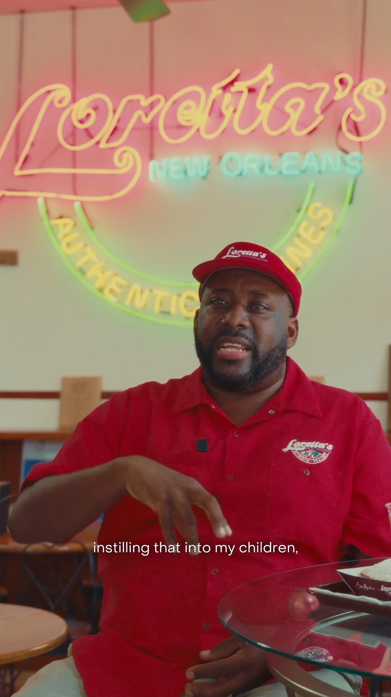

Documentary · Atlanta, GA
Documentary filmmaker in Atlanta
Brand documentaries, founder stories and interview-led films. I direct, shoot and edit real stories about the people behind brands and businesses.
Stories worth telling
Every brand and business starts with a person and a reason. I make short documentaries that put that story on screen, told by the people who lived it.
I plan the interviews, shoot them and the world around them, and build the story in the edit. You get a film that works on your site, on YouTube and in cutdowns for social.
Documentary work
Real stories, told by the people in them.
What I make
- Brand documentariesHow a company started, what it stands for and where it is going
- Founder storiesEntrepreneurs telling their story in their own words
- Interview-led filmsSit-down interviews cut with footage from their world
- DocuseriesMulti-part stories for YouTube and social
- Social cutdownsShort vertical edits from the main film
How it works
- Talk it throughWho the story is about, what you want people to feel, and where the film will live.
- Research and planI learn the story and plan the interview questions, locations and b-roll.
- ShootInterviews and b-roll, solo or with a small crew depending on the project.
- Edit and deliveryI build the story in the edit, you review the cut, and I deliver the film and any cutdowns.
Questions
How much does a documentary cost?
Every project is quoted from the brief. It depends on the number of shoot days, interviews and locations, and how many cutdowns you need.
How long are the films?
Anything from a short founder story for social to a longer film for YouTube. We decide the length based on where it will live.
Do you write the interview questions?
Yes. I plan them with you so the story comes out naturally on camera.
Who do you make documentaries for?
Brands, businesses and the founders behind them.
Can you also make ads from the footage?
Yes. The same shoot can feed brand films and social ads. See commercial video in Atlanta.
Got a story to tell?